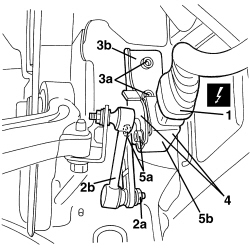

5540C42 SENSOR FOR CORRECTING/ALIGNING GAS DISCHARGE LIGHTING UNITS ON FRONT SUSPENSION - R.R.
- Path
- Procedures > 55 ELECTRICAL EQUIPMENT > 5540 EXTERIOR LIGHTING > 5540C HEADLAMP/LIGHT CLUSTER ALIGNMENT CORRECTION DEVICES > 5540C42 SENSOR FOR CORRECTING/ALIGNING GAS DISCHARGE LIGHTING UNITS ON FRONT SUSPENSION - R.R.
- Kind
- repair procedure (removal / refitting; the operation number is the code)
- Applies to
- all engines; all production periods
- Interactive page
- https://sloeber94.github.io/elrnDB-aBrrSpdr/en/#/946002405
Applies to: all engines; all production periods
 Removing
Removing
 Refitting
RefittingOp. 4450B02 LEFT FRONT WHEEL - R.R
Op. 7055B90 LEFT FRONT WHEEL ARCH LINER - R.R.
1. Disconnect the electrical connection.
Description | Component |
|---|---|
FRONT HEADLAMP ALIGNMENT CORRECTER POTENTIOMETER (CAF) | See K001 HEADLAMP ALIGNMENT CORRECTOR FRONT POTENTIOMETER (CAF) |
2. Undo nut (2a) connecting the unit to rod (2b).
3. Loosen the support (3b) fixing bolts (3a).
4. Remove the sensor and support.
5. If necessary, undo the bolts (5a) and separate the sensor (5b) from the support.

Applies to: all engines; all production periods
Refitting
Removing- Check that the sensor is not damaged.
- If separated, position the sensor on the support and tighten the bolts.
- Position the sensor and support and tighten the bolts.
- Tighten the rod connection nut.
- Connect the electrical connection.
Topics linked from this page (3)
- 4450B02 LEFT FRONT WHEEL - R.R
- 7055B90 LEFT FRONT WHEEL ARCH LINER - R.R.
- K001 HEADLAMP ALIGNMENT CORRECTOR FRONT POTENTIOMETER (CAF)